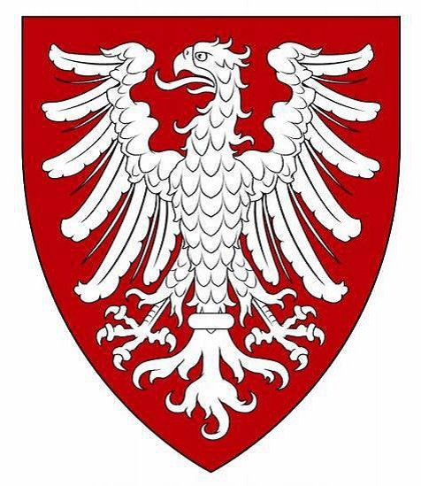

65408396046 Greve Konrad II von Werl-Arnsberg
Greve av Werl-Arnsberg. Blev ca 52 år.

Född:
omkring 1040 Werl, Tyskland. [1]
Död:
1092 Friesland, Nederländerna. [1]
Barn:
Personhistoria
1040?
Födelse omkring 1040 Werl, Tyskland
[1]
1092
Död 1092 Friesland, Nederländerna
[1]
Källor